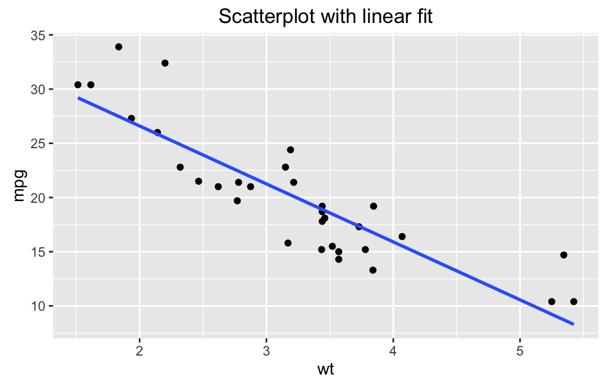
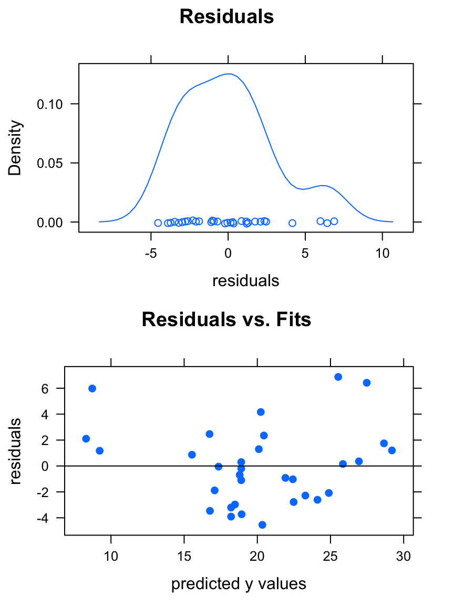
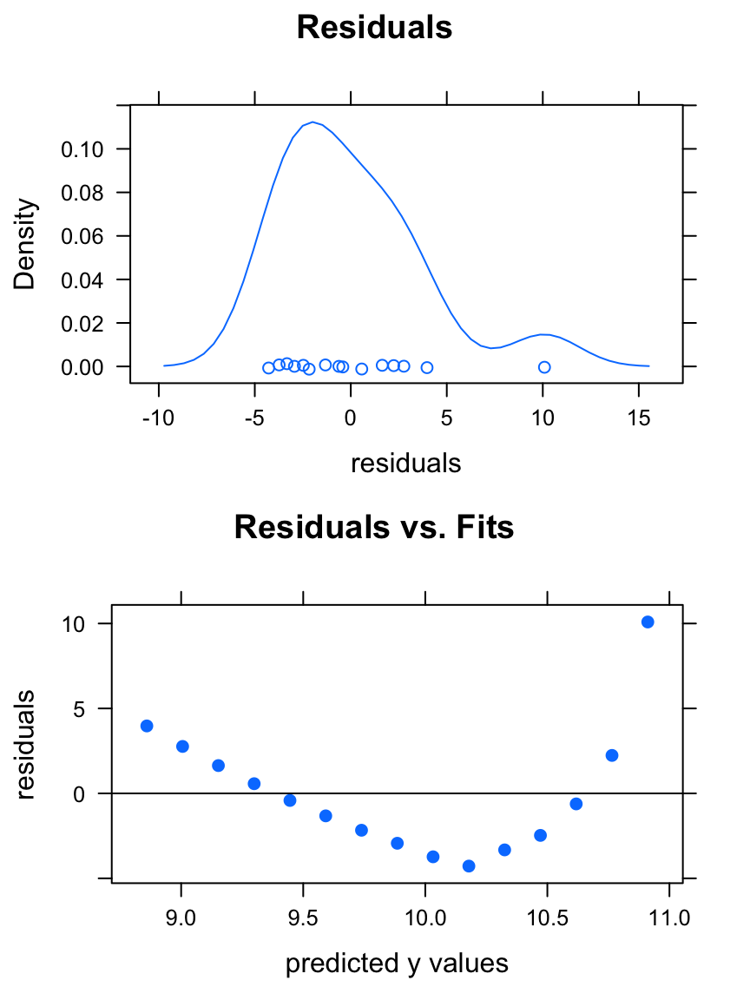
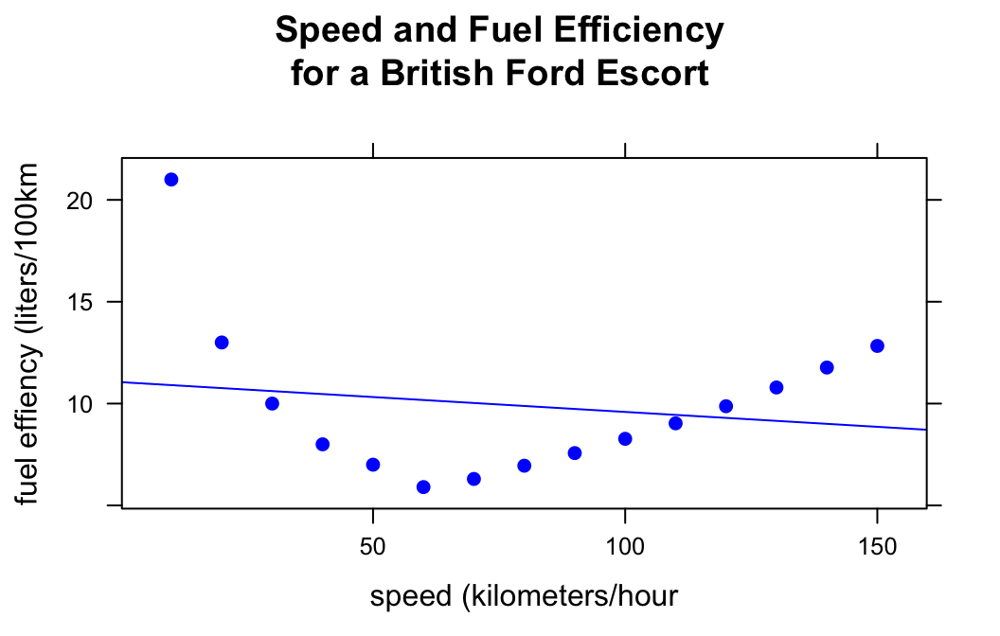
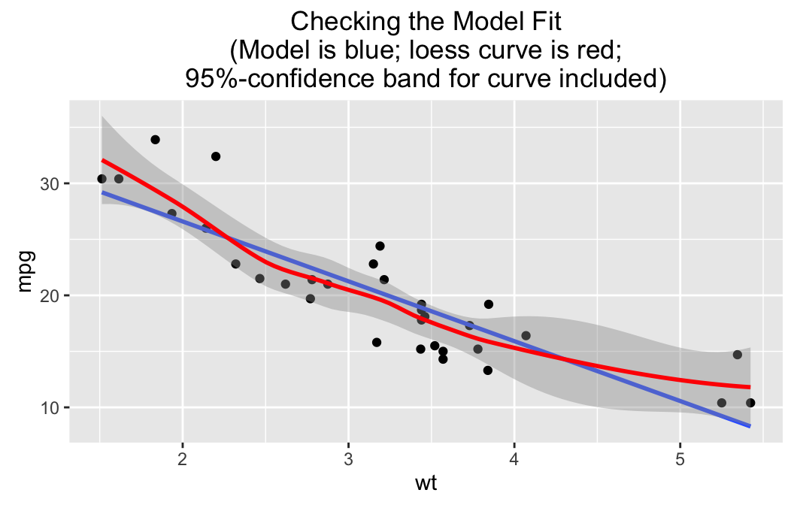
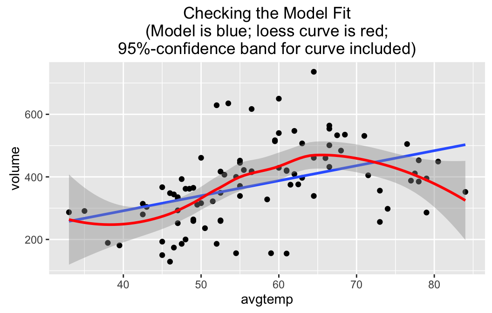

The function lmGC() is a starter-tool for simple linear regression, when you are studying the relationship between two numerical variables, one of which you consider to be an explanatory or predictor variable and the other of which you think of as the response. It’s only a starter-tool: by the end of the course, or in later statistics courses, you will move on to R’s function lm(), which allows you to work with more than one explanatory variable and which provides additional useful information in its output. Also, in lm() the explanatory variable(s) can even be factors!
The function (and some of the data) that we will use comes from the tigerstats package, so make sure that it is loaded:
require(tigerstats)In this tutorial we will work with a couple of data sets: mtcars from the data package that comes with the basic R installation,fuel from the tigerstats package and RailTrail from the package mosaicData, so make sure you become familiar with them. The following commands may be helpful in this regard:
data(mtcars)
View(mtcars)
help(mtcars)For fuel:
data(fuel)
View(fuel)
help(fuel)For RailTrail:
require(mosaicData)
data(RailTrail)
View(RailTrail)
help(RailTrail)Like many R functions, lmGC() accepts formula-data input. The general command looks like:
\[lmGC(response \sim explanatory, data = DataFrame)\]
If you are interested in studying the relationship between the fuel efficiency of a car (mpg in the mtcars data frame, measured in miles per gallon) and its weight (wt in mtcars, measured in thousands of pounds), then you can run:
lmGC(mpg ~ wt, data = mtcars)##
## Linear Regression
##
## Correlation coefficient r = -0.8677
##
## Equation of Regression Line:
##
## mpg = 37.2851 + -5.3445 * wt
##
## Residual Standard Error: s = 3.0459
## R^2 (unadjusted): R^2 = 0.7528The output to the console is rather minimal. You get:
When the value of the explanatory variable for an individual is known and you wish to predict the value of the response variable for that individual, you can use the predict() function. Its arguments are the linear model that is created by lmGC(), and the value x of the explanatory variable.
If you think that you might want to use predict(), you may first want to store the model in a variable, for example:
WeightEff <- lmGC(mpg ~ wt, data = mtcars)Then if you want to predict the fuel efficiency of a car that weights 3000 pounds, run this command:
predict(WeightEff, x = 3)## Predict mpg is about 21.25,
## give or take 3.095 or so for chance variation.We predict that a 3000 pound car (from the time of the Motor Trend study that produced this data) would have a fuel efficiency of 21.25 mpg, give or take about 3.095 mpg or so. The “give-or-take” figure here is known as the prediction standard error. It’s a little bit bigger than the residual standard error \(s\), and as a give-or-take figure it’s a bit more reliable. (By the way, it also differs for different values of the explanatory variable.)
You can also get a prediction interval for the response variable if you use the level argument:
predict(WeightEff,x=3,level=0.95)## Predict mpg is about 21.25,
## give or take 3.095 or so for chance variation.
##
## 95%-prediction interval:
## lower.bound upper.bound
## 14.929874 27.573549The interval says you can be about 95% confident that the actual efficiency of the car is somewhere between 14.9 and 27.6 miles per gallon.
But we are getting ahead of ourselves! In order to use linear models at all, we need to make sure that our data really do show a linear relationship. The single best way to check this is to look at a scatter-plot, so lmGC() comes equipped with a option to produce one: just set the argument graph to TRUE, as follows:
lmGC(mpg ~ wt, data = mtcars, graph = TRUE)##
## Linear Regression
##
## Correlation coefficient r = -0.8677
##
## Equation of Regression Line:
##
## mpg = 37.2851 + -5.3445 * wt
##
## Residual Standard Error: s = 3.0459
## R^2 (unadjusted): R^2 = 0.7528
The scatter-plot includes the regression line. Indeed, the cloud of point seems to follow a line fairly well. The relationship may be thought of as linear, so using lmGC() for tasks like prediction does make sense, for this data.
You can also perform some simple diagnostics using the plot() function:
plot(WeightEff)
You get two graphs:
fitted \(y\)-values (the \(y\)-coordinates of the points on the original scatter-plot). If the points exhibit a linear relationship with about the same amount of scatter all the way along the regression line, then this plot will look like a random cloud of pointsIf you plan to use your regression line for prediction and to rely upon the prediction standard errors and prediction intervals provided by the predict() function, then the residuals should be roughly bell-shaped, and the plot of residuals vs. fits should look pretty much like a random cloud.
In this case, the plots indicate that we can make reliable predictions from our linear model.
On the other hand, consider fuel data frame, which shows the results of a study where a British Ford Escort was driven at various speed along a standard course, and the fuel efficiency (in kilometers traveled per liter of fuel consumed) was recorded at each speed. Let’s try a linear model with speed as explanatory and efficiency as the response, with some diagnostic plots attached:
effSpeed <- lmGC(efficiency ~ speed, data = fuel)
plot(effSpeed)
The residuals have a roughly-bell-shaped distribution, but the residual plot is clearly patterned. Something is amiss! Let’s look at a scatter-plot of the data:
xyplot(efficiency~speed,data=fuel,
xlab="speed (kilometers/hour",
ylab="fuel effiency (liters/100km",
pch=19,col="blue",type=c("p","r"),
main="Speed and Fuel Efficiency\nfor a British Ford Escort")
The relationship is strongly curvilinear: it makes no sense to use the regression line (shown in the plot above) to study the relationship between these two variables!
Another nice way to check whether your fit is appropriate to the data is to use the check argument for lmGC(). Let’s perform a check on the WeightEff model:
lmGC(mpg ~ wt, data = mtcars, check = TRUE)##
## Linear Regression
##
## Correlation coefficient r = -0.8677
##
## Equation of Regression Line:
##
## mpg = 37.2851 + -5.3445 * wt
##
## Residual Standard Error: s = 3.0459
## R^2 (unadjusted): R^2 = 0.7528
The linear fit is graphed, but there is also a “loess” curve, a smooth curve that does not make much assumption about what kind of relationship produced the data in question. Surrounding the loess curve is a 95%-confidence band: based on the data we are pretty sure that the “real” relationship between wt and mpg is some function with a graph that lies within the band.
Now it is highly unlikely that our linear model gives the “real” relationship, but notice that the line stays within the 95%-confidence band. This means that it’s not such a bad idea to use the line to predict fuel efficiency from weight, for the range of weights for which we have data. The line does wander near the edge of the band for the higher weights, though, so we might employ extra caution there: common sense says, after all, that fuel efficiency should “level out” at very high weights, rather than follow the line.
On the other hand, consider a check on a linear model for the relationship between volume (number of bikes on the trail) and avgtemp (average temperature for the day) in the RailTrail data frame:
lmGC(volume~avgtemp,data=RailTrail,check=TRUE)##
## Linear Regression
##
## Correlation coefficient r = 0.4269
##
## Equation of Regression Line:
##
## volume = 99.6023 + 4.802 * avgtemp
##
## Residual Standard Error: s = 115.9202
## R^2 (unadjusted): R^2 = 0.1822
Note that the regression line wanders a bit outside the band, so a linear fit probably is not quite adequate–especially for days with higher temperatures, when people may forsake bicyle trials for other warm-weather activities such as swimming. At very high temperatures outside the range for which we have data, volume should be low, so the “real” relationship is probably quite curvilinear. Perhaps we should learn how to fit something other than a straight line to data!